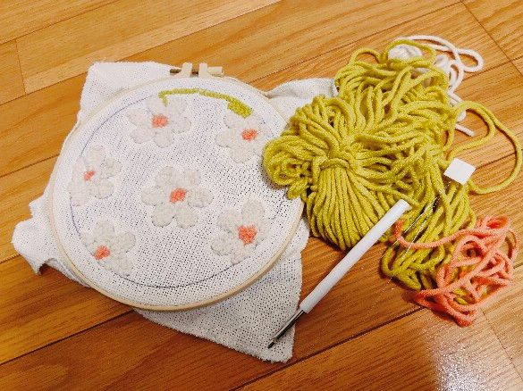
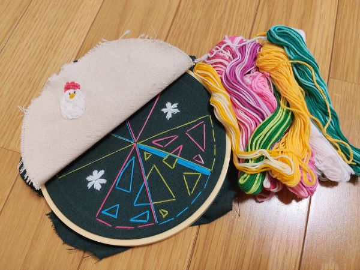
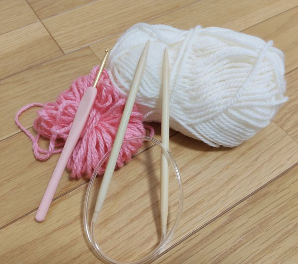

- トップ >
- 難しかった部屋
難しかった部屋
趣味を広げる中でちょっと難しかったかなというものをまとめたものです。
201号室（パンチニードルセットさん）

布にパンチニードルを刺して、毛糸を縫っていくものです。なぜ難しかったかというと、一気に熱が入り、途中まではやれていたのですが、別日になるとそのままにしてしまい、継続して続けることができなかったからです。
ですが、無心で進めることができるのでお時間があり、継続してできるときにするのが個人的にお勧めかなと思いました。没頭できるのでいいと思います。
202号室（刺繍さん）

刺繍は、刺繍枠に布などをピンと張り、専用の針や糸を使って文字や絵柄を縫っていくものです。私が一番初めに作ったのは、ニワトリのキャラクターです。結構時間がかかってしまい、針の扱いに苦戦しました。次は、絵柄に挑戦してみようと思ったのですが、細かい作業が難しかったです。 もう一度挑戦するなら、小さい絵柄から初めて、少しづつ慣れていくのがいいなと思います。結構楽しかったのですが、難しかったです…
203号室（編み物さん）

「編み物ができる人ってかっこいいな」という想いから、始めた編み物です。ですが1日(正確に言うと3時間)で諦めてしまいました(泣)1列だけ編めていたのですが、個人的に複雑な編み方が多く混乱してしまい、慌ててしまいました。 という点が難しかったところです。いつか再挑戦してみたいと思っています。